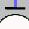
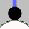
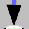

Updates regarding this plugin will be posted to the Cytoscape-announce mailing list. You can easily subscribe to the mailing list or browse the archives.
| Entity | Visual Shape |
| Proteins, small molecules, complexes and other physical entities (as defined in the BioPAX pathway format). | |
| Conversions, biochemical reactions, modulations and other interaction entities (as defined in the BioPAX pathway format). | |
| Interaction Type | Arrow Shape |
| Inhibition |  |
| Containment, e.g. a complex can contain one or more proteins. |  |
| All other interaction types, e.g. activation, left, right, etc. |  |
| Labels for Physical Entities | |
| All physical entities will be labeled as follows: | |
| [NAME] [-CHEMICAL_MODIFICATION_ABBR] [(CELULAR_LOCATION_ABBR)] | |
| where [NAME] is determined by the following order of precedence: NAME, SHORT NAME, or Shortest Synonym, | |
| and [CHEMICAL_MODIFICATION_ABBR] and [CELLULAR_LOCATION_ABBR] are one of the abbreviations described below. | |
| Example: | |
| MITF: | MITF |
| MITF Phosphorylated: | MITF-P |
| MITF Phosphorylated, in the cytoplasm: | MITF-P (CP) |
| Abbreviations for Chemical Modifications | |
| acetylation site | A |
| glycosylation site | G |
| phosphorylation site site | P |
| proteolytic cleavage site | PCS |
| sumoylation site | S |
| ubiquitination site | U |
| [All others] | No Abbreviation will be provided. |
| Abbreviations for Cellular Locations | |
| cellular component unknown | No Abbreviation will be provided. |
| centrosome | CE |
| cytoplasm | CY |
| endoplasmic reticulum | ER |
| endosome | EN |
| extracellular | EM |
| golgi apparatus | GA |
| mitochondrion | MI |
| nucleus | NU |
| plasma membrane | PM |
| ribosome | RI |
| [All others] | No Abbreviation will be provided. |
Sander Group, Computational Biology Center
Memorial Sloan-Kettering Cancer Center, New York City
For any questions concerning this plugin, please contact:
This software is made available under the LGPL (Lesser General Public License).
Version: 0.1
Version: 0.2
{kind=link}
{kind=link}
{kind=link}